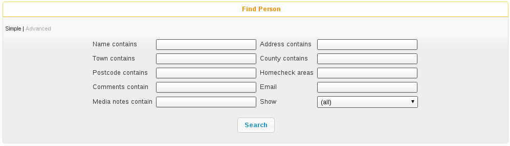
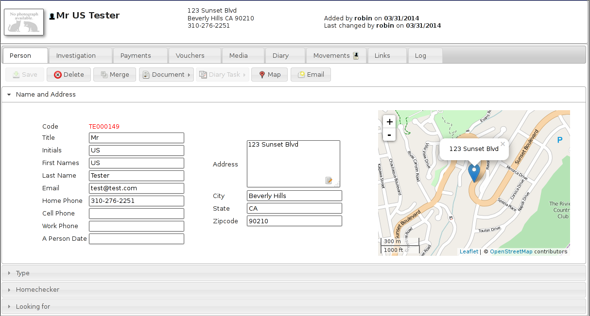
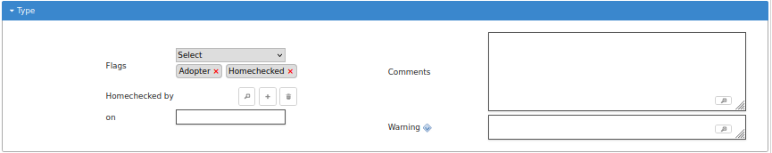
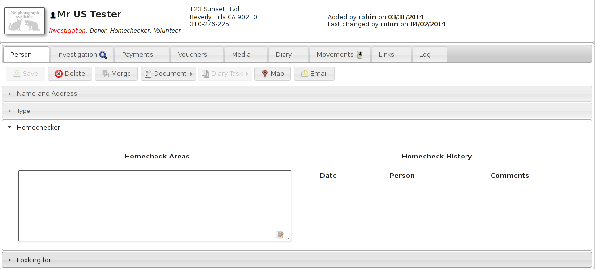
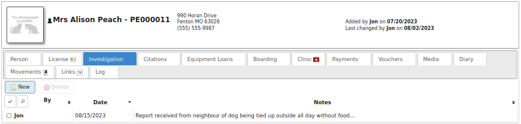
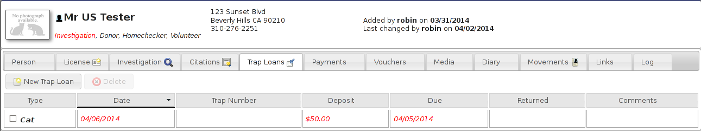
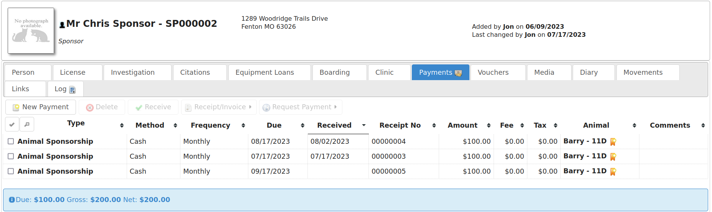

People¶
In addition to animals, Animal Shelter Manager can track information about people. People represent any person or organisation who has any contact with the shelter, be it staff member, volunteer, care officer, animal adopter/fosterer, etc.
Find Person¶
The advanced find person screen is used to search for groups of people matching criteria. It works exactly the same as the advanced find animal screen.
You can choose to filter the results to only show people who have the flags you select in the flags dropdown.
Edit Person¶
The person screen is also grouped into separate tabbed sections with an information banner. The screen allows you to store contact and classification information for a person, along with payments they make, any useful multimedia, diary notes and animal movements, etc.
Facilities are also supplied to write documents to a person, email them from within ASM and find their address on a map.
Person Types¶
The Type panel allows you to set various classification flags for the person, along with comments and details on membership to your organisation.
Note
The gift aid registered flag appears for people in the UK. Setting this will default the gift aid flag when creating payments from this person for tracking gift aid claims to HMRC.
Looking For¶

Using the “looking for” panel, you can supply criteria for animals that person is interested in adopting - it’s a cut down version of the advanced find animal screen with just the criteria relevant for a prospective adopter.
Selecting active from the dropdown causes this person’s criteria to be included in the list of actively searching people. You also need to set a date to make the criteria active, and optionally one to make it inactive if you would like to give up looking after a period of time. To view matches for currently active people, run the “Person Looking For” report under ASM->Person->Match Looking For. Because it can be quite intensive, the looking for report is run as part of the daily tasks by ASM so it may take 24 hours for new people to appear. An alert will also appear on the dashboard when matches are found.
Only one set of criteria can be held per person.
Homechecker¶
Animal Shelter Manager allows you to keep a list of your volunteer homecheckers in the person database.
To use this facility, simply set the “Homechecker” flag on the type panel, and add the areas they are willing to check in the Areas box under the Homechecker panel.
It is best to include both the area name and postal/zipcode in the box (eg: Rotherham S60). You can then use the find person screen to enter the name of an area you want to check by postcode or name and you will receive a list of homecheckers who cover that area.
When marking a person as homechecked, you can link to the person record of the person who did the check, and it will show up in their homecheck history.
License¶

The license tab holds details of animals licensed to this person. This tab can be removed with the option “Disable animal control functionality from menus and screens” in the remove unwanted functionality section of Settings-Options-Options.
Investigation¶
ASM allows you to keep notes on any investigation currently going on against a person.This tab can be removed with the option “Disable animal control functionality from menus and screens” in the remove unwanted functionality section of .
Citations¶

The citations tab holds details of citations and fines given to this person. This tab can be removed with the option “Disable animal control functionality from menus and screens” in the remove unwanted functionality section of .
Equipment Loans¶
The equipment loan tab holds details of equipment loaned to this person. This tab can be removed with the option “Disable animal control functionality from menus and screens” in the remove unwanted functionality section of .
Payments¶
ASM also allows you to track payments from people here. Payments are any form of income and can be broken down into classifications, such as adoption fees, donations, specific fundraising donations, sponsorship, etc.
You can use this information to produce financial reports and graphs.
Payments can have a date due as well as a date received and can be assigned a frequency. If the frequency is anything but “One-Off”, ASM will create the next payment in the sequence when you mark the current payment as received. If a payment has a due date of today or older, an alert will be shown on the main screen.
Vouchers¶
Lots of UK shelters run a voucher system to allow poorer owners on benefits cheaper access to care from their clinics. Vouchers have an issue and expiry date, along with a cash sum. You can set up as many different voucher types as you like to cover different areas of medical care. The voucher tab allows you to log vouchers given to owners here.
Some shelters will give out vouchers to have juvenile animals neutered/spayed or microchipped by the new owner after the animal has been adopted.
Links¶
The links tab enables you to view every other record in the system that this person is attached to.
Merging People¶
The merge button on the person screen toolbar allows you to choose another person record to merge into this one.
This is useful, because on occasion, users will key the same person in twice with a slightly different name and/or address and probably adopt an animal to them, etc.
Open the person record that you want to merge into (the one that you want to keep). Hit the merge button and choose the duplicate person record.
ASM will reparent all of the movements, links, media, etc from the duplicate person into the currently open record. When it’s finished doing that, the duplicate person record will be removed.
If the target person has any blank contact fields that are present on the duplicate person (address, telephone or email fields), they will be copied from the duplicate before it is deleted.